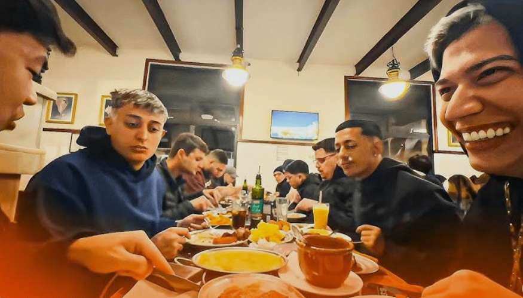

Tropa do Goti

A “tropa do Goti” é um grupo de amigos influenciadores brasileiros, como Yuri 22 e Murilim e Astro, conhecidos por aparecerem juntos em vídeos e conteúdos nas redes sociais, geralmente com humor, lifestyle e muita resenha entre amigos.
As lives icônicas de Yuri com Murilim ficaram conhecidas pela energia caótica e divertida, onde os dois jogam cassino online enquanto interagem com o chat, rendendo momentos engraçados, reações exageradas e muitos cortes que viralizam nas redes.
O meme “bomba 1000x” do Murilim ficou marcado pela frase icônica “VEM BOMBA MIL X!”, dita com muita empolgação nas lives, representando aquele momento de expectativa máxima que virou bordão entre os fãs e viralizou nas redes.
Nas lives, Yuri 22 sempre puxa o Astro (o “00”) pra beber junto, insistindo na resenha enquanto o Astro tenta se segurar, o que vira uma situação comum e engraçada que quem acompanha já espera acontecer.
O Goti também ficou marcado nas resenhas por causa da “nhan nhan”, sua ex que sempre vira assunto no meio das conversas, rendendo aquele meme clássico: “o Goti vai casar com a nhan nhan? não acompanho muito”, usado quando alguém finge não entender ou se faz de desentendido nas lives.
O Goti e o Judas Dona virando assunto por conta de uma treta e desentendimentos que o público interpreta como “traição”, o que gerou várias piadas e cortes exagerados nas redes e fica a pergunta 50k é pouco?.
No fim, toda a tropa do Goti e seus amigos acaba virando um grande compilado de resenhas, lives e memes que o público acompanha e comenta do próprio jeito, sempre fechando os momentos mais intensos com o clássico “juro por tudo tropa”, que virou uma frase de impacto entre os fãs nas redes.